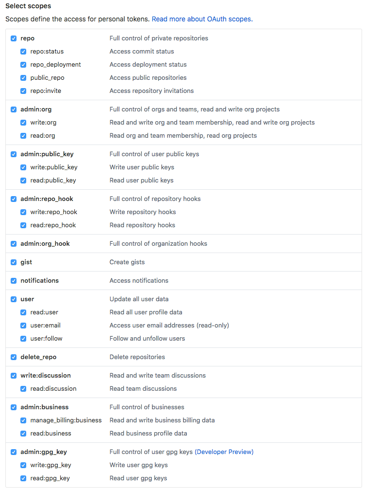

<!DOCTYPE html>
<!--[if IE 8]><html class="no-js lt-ie9" lang="en" > <![endif]-->
<!--[if gt IE 8]><!--> <html class="no-js" lang="en" > <!--<![endif]-->
<head>
  <meta charset="utf-8">
  <meta http-equiv="X-UA-Compatible" content="IE=edge">
  <meta name="viewport" content="width=device-width, initial-scale=1.0">
  
  
  <link rel="shortcut icon" href="../img/favicon.ico">
  <title>Mkdocs Project Build - My Docs</title>
  <link href='https://fonts.googleapis.com/css?family=Lato:400,700|Roboto+Slab:400,700|Inconsolata:400,700' rel='stylesheet' type='text/css'>

  <link rel="stylesheet" href="../css/theme.css" type="text/css" />
  <link rel="stylesheet" href="../css/theme_extra.css" type="text/css" />
  <link rel="stylesheet" href="//cdnjs.cloudflare.com/ajax/libs/highlight.js/9.12.0/styles/github.min.css">
  
  <script>
    // Current page data
    var mkdocs_page_name = "Mkdocs Project Build";
    var mkdocs_page_input_path = "Git-Build.md";
    var mkdocs_page_url = null;
  </script>
  
  <script src="../js/jquery-2.1.1.min.js" defer></script>
  <script src="../js/modernizr-2.8.3.min.js" defer></script>
  <script src="//cdnjs.cloudflare.com/ajax/libs/highlight.js/9.12.0/highlight.min.js"></script>
  <script>hljs.initHighlightingOnLoad();</script> 
  
</head>

<body class="wy-body-for-nav" role="document">

  <div class="wy-grid-for-nav">

    
    <nav data-toggle="wy-nav-shift" class="wy-nav-side stickynav">
      <div class="wy-side-nav-search">
        <a href=".." class="icon icon-home"> My Docs</a>
        <div role="search">
  <form id ="rtd-search-form" class="wy-form" action="../search.html" method="get">
    <input type="text" name="q" placeholder="Search docs" title="Type search term here" />
  </form>
</div>
      </div>

      <div class="wy-menu wy-menu-vertical" data-spy="affix" role="navigation" aria-label="main navigation">
	<ul class="current">
	  
          
            <li class="toctree-l1">
		
    <a class="" href="..">Introduction</a>
	    </li>
          
            <li class="toctree-l1">
		
    <span class="caption-text">Steps</span>
    <ul class="subnav">
                <li class="">
                    
    <a class="" href="../Environment/">Environment</a>
                </li>
                <li class=" current">
                    
    <a class="current" href="./">Mkdocs Project Build</a>
    <ul class="subnav">
            
    <li class="toctree-l3"><a href="#outline">Outline</a></li>
    

    <li class="toctree-l3"><a href="#mkdocs-initialization">Mkdocs initialization</a></li>
    

    <li class="toctree-l3"><a href="#git-initialization">Git Initialization</a></li>
    

    <li class="toctree-l3"><a href="#github-tocken">GitHub Tocken</a></li>
    

    </ul>
                </li>
                <li class="">
                    
    <a class="" href="../Travis-Setting/">Travis Setting</a>
                </li>
                <li class="">
                    
    <a class="" href="../Travis-Build/">Travis Build</a>
                </li>
                <li class="">
                    
    <a class="" href="../GitHub-Pages/">GitHub Pages</a>
                </li>
                <li class="">
                    
    <a class="" href="../Math-Support/">Math Support</a>
                </li>
                <li class="">
                    
    <a class="" href="../Extensions/">Extensions</a>
                </li>
    </ul>
	    </li>
          
            <li class="toctree-l1">
		
    <a class="" href="../about/">About</a>
	    </li>
          
        </ul>
      </div>
      &nbsp;
    </nav>

    <section data-toggle="wy-nav-shift" class="wy-nav-content-wrap">

      
      <nav class="wy-nav-top" role="navigation" aria-label="top navigation">
        <i data-toggle="wy-nav-top" class="fa fa-bars"></i>
        <a href="..">My Docs</a>
      </nav>

      
      <div class="wy-nav-content">
        <div class="rst-content">
          <div role="navigation" aria-label="breadcrumbs navigation">
  <ul class="wy-breadcrumbs">
    <li><a href="..">Docs</a> &raquo;</li>
    
      
        
          <li>Steps &raquo;</li>
        
      
    
    <li>Mkdocs Project Build</li>
    <li class="wy-breadcrumbs-aside">
      
    </li>
  </ul>
  <hr/>
</div>
          <div role="main">
            <div class="section">
              
                <h4 id="outline">Outline<a class="headerlink" href="#outline" title="Permanent link">&para;</a></h4>
<ul>
<li>Mkdocs initialization</li>
<li>git initialization</li>
<li>GitHub tocken</li>
</ul>
<h4 id="mkdocs-initialization">Mkdocs initialization<a class="headerlink" href="#mkdocs-initialization" title="Permanent link">&para;</a></h4>
<p>Getting started is super easy.
<pre class="highlight"><code>mkdocs new my-project
cd my-project</code></pre></p>
<p>There's a single configuration file named <code>mkdocs.yml</code>, and a folder named <code>docs</code> that will contain your documentation source files. Right now the <code>docs</code> folder just contains a single documentation page, named <code>index.md</code>.
</p>
<blockquote>
<p>You can also start serve in the following steps:</p>
</blockquote>
<p>MkDocs comes with a built-in dev-server that lets you preview your documentation as you work on it. Make sure you're in the same directory as the <code>mkdocs.yml</code> configuration file, and then start the server by running the <code>mkdocs serve</code> command:</p>
<p><pre class="highlight"><code>$ mkdocs serve
INFO    -  Building documentation...
INFO    -  Cleaning site directory
[I 160402 15:50:43 server:271] Serving on http://127.0.0.1:8000
[I 160402 15:50:43 handlers:58] Start watching changes
[I 160402 15:50:43 handlers:60] Start detecting changes</code></pre>
Open up <code>http://127.0.0.1:8000/</code> in your browser, and you'll see the default home page being displayed:
</p>
<blockquote>
<p>You could also use <code>mkdocs serve -a &lt;yourhost&gt;:&lt;port&gt;</code> to specify the serve.</p>
</blockquote>
<p>Example:
<pre class="highlight"><code>$ mkdocs serve -a 0.0.0.0:8000
INFO    -  Building documentation...
INFO    -  Cleaning site directory
[I 190414 02:43:38 server:298] Serving on http://0.0.0.0:8000
[I 190414 02:43:38 handlers:59] Start watching changes
[I 190414 02:43:38 handlers:61] Start detecting changes</code></pre></p>
<h4 id="git-initialization">Git Initialization<a class="headerlink" href="#git-initialization" title="Permanent link">&para;</a></h4>
<p>Enter <code>&lt;your project&gt;</code> folder through the terminal.
<pre class="highlight"><code>git init
git add .
git commit -m "Basic Mkdocs files"</code></pre></p>
<h4 id="github-tocken">GitHub Tocken<a class="headerlink" href="#github-tocken" title="Permanent link">&para;</a></h4>
<p>We need <code>GITHUB_TOKEN</code> for Travis to build Mkdocs. So we generate one in <a href="https://github.com/settings/tokens">Personal access tokens</a>.(or you can go <code>Settings -&gt; Developer settings -&gt; Personal access tokens</code> to generate one).</p>
<p></p>
<p>And make sure click every selection.</p>
<p></p>
<p>Copy the token we generated for later use.</p>
              
            </div>
          </div>
          <footer>
  
    <div class="rst-footer-buttons" role="navigation" aria-label="footer navigation">
      
        <a href="../Travis-Setting/" class="btn btn-neutral float-right" title="Travis Setting">Next <span class="icon icon-circle-arrow-right"></span></a>
      
      
        <a href="../Environment/" class="btn btn-neutral" title="Environment"><span class="icon icon-circle-arrow-left"></span> Previous</a>
      
    </div>
  

  <hr/>

  <div role="contentinfo">
    <!-- Copyright etc -->
    
  </div>

  Built with <a href="http://www.mkdocs.org">MkDocs</a> using a <a href="https://github.com/snide/sphinx_rtd_theme">theme</a> provided by <a href="https://readthedocs.org">Read the Docs</a>.
</footer>
      
        </div>
      </div>

    </section>

  </div>

  <div class="rst-versions" role="note" style="cursor: pointer">
    <span class="rst-current-version" data-toggle="rst-current-version">
      
      
        <span><a href="../Environment/" style="color: #fcfcfc;">&laquo; Previous</a></span>
      
      
        <span style="margin-left: 15px"><a href="../Travis-Setting/" style="color: #fcfcfc">Next &raquo;</a></span>
      
    </span>
</div>
    <script>var base_url = '..';</script>
    <script src="../js/theme.js" defer></script>
      <script src="https://cdnjs.cloudflare.com/ajax/libs/mathjax/2.7.0/MathJax.js?config=TeX-AMS-MML_HTMLorMML" defer></script>
      <script src="../search/main.js" defer></script>

</body>
</html>
